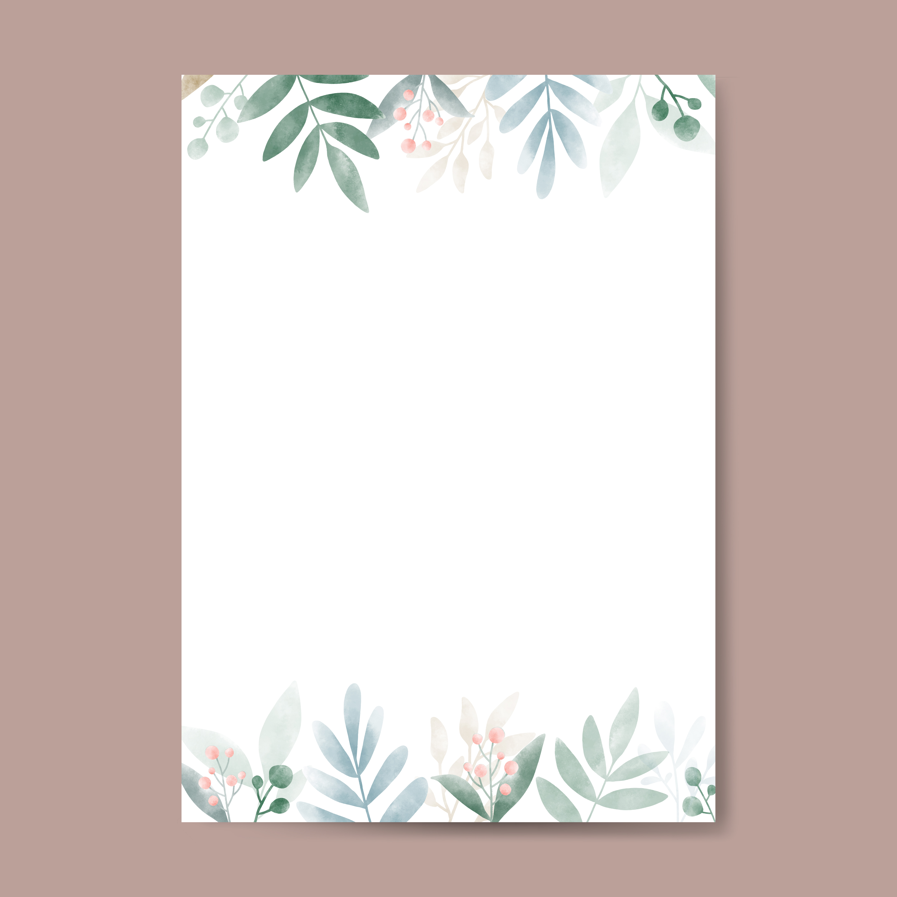

[닫기]
엄마 아빠 경서예요
어버이날을 맞아서 편지를 쓰려해요
이번년도 어버이날엔 취업해서 받은 월급으로 뭔가 대단한 걸 해드릴 수 있을 줄 알았는데 조촐해서 부끄럽네요...
여태 하고 싶은 게 많을 때 하고 싶은 거 해주겠다고 뒷바라지 해주느라 고생 많으셨죠... 아직 이룬 거 하나 없지만 그래도 이제는 헛 된 꿈은 꾸지 않으려고 노력하고 있어요 . 이제 정말 내가 돈을 벌어야 할 나이가 되어가고 주변만 봐도 하나둘씩 일을 시작해서 부모님께 비싼 선물도 해드리고 하는데 저는 그러지 못해서 죄송해요. 제가 빠른 시일 내에는 못하더라도 너무 늦지 않게 무언가 이뤄내서 더 기쁜 일 많게 해드릴게요.
표현은 잘 못하지만 정말로 매일매일 감사하고 있어요. 지금 이렇게 운동도 다니고 하루종일 놀면서 쉴 수 있는 것도, 천천히 뭘 이뤄야할 지 고민 할 수 있는 것도, 하기 싫은 일을 하지 않을 수 있었던 것도 다 엄마랑 아빠 덕분이라는 걸 알아요. 그리고 사소하게 엄마가 같이 운동 다녀주는 거, 영양제 챙겨주는 거, 쇼핑하다가 내 옷까지 사는 거, 아빠가 외출할 때마다 창 밖으로 배웅해주는 거, 내가 좋아하는 과자 사오는 거, 알바 늦으면 데려다 주는 거 등등
다 감사하고 있어요. 사실 익숙해져서 당연하게 생각될 때가 많은데 그러지 않으려고요.
계속 계속 좋은 사람이 되도록 노력하고 무언가를 다시 시작할 수 있도록 노력할게요.
내가 지금 당장 뭘 하고 있든 항상 애정어리게 지켜봐주셔서 감사합니다.
시간이 갈 수록 느끼는 거지만 늘 건강하셨으면 좋겠어요.
사랑해요.